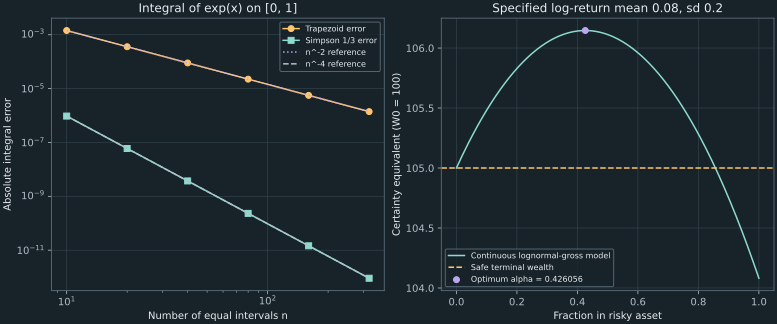

15. Numerical integration for financial expectations
For the lectures' one-year log-return model, investing half of initial wealth 100 in the risky asset gives expected canonical utility approximately $-4.440536178267\times10^{-5}$ and certainty equivalent 106.112683058. The optimal risky fraction is near 0.426056375. Obtaining these numbers requires more than evaluating utility at a few plausible returns: the density, integration variable, omitted tails, grid error, and numerical comparison must agree.
We derive composite trapezoidal and Simpson rules, prove their error bounds under stated smoothness, and test them against known integrals. Then we evaluate continuous expected utility and reproduce the complete R/Python calculus laboratories, including their differentiation, bond, and accrued-interest examples. Convergence checks and a separate tail bound make the numerical evidence inspectable.
Source spine: recording 40, numerical integration, recording 44, R calculus laboratory, and recording 45, Python laboratory. The remaining quadrature and supplied-price sensitivity parts of recording 43 are covered here. The kernel error proofs, explicit normal-tail bound, missed-feature example, and independently calculated continuous optimum are elaborations.
15.1 Replace an integral by a declared weighted sample rule Recording 40, 1:15
Let $I=\int_a^bf(x)\,dx$ with finite $a<b$. A quadrature rule approximates this integral using finitely many function values and numerical weights. For an equal grid, choose a positive integer $n$ of intervals, set $h=(b-a)/n$, and use $n+1$ nodes $x_i=a+ih$, $i=0,\ldots,n$. Five sample values therefore describe four intervals, not five.
The integral is a signed quantity when $f$ takes negative values. Expected canonical utility in this chapter is negative; it is still an ordinary weighted integral. A geometric area interpretation is helpful for a nonnegative integrand, but should not silently replace a signed financial expectation.
There are two different input contracts. A callback-based integrator can request new function values as it refines a grid. A sampled-data rule receives an existing value vector and must know the corresponding grid. The companion's sampled_integral assumes equally spaced values over its given interval. It validates finite scalar entries and interval ordering, but cannot reconstruct unprovided sampling locations. The callback wrapper creates its own grid and checks that its nodes are distinguishable.
A fully specified five-point workshop
Use the original teaching function $f(x)=(1+x)^2$ on $[0,1]$. At nodes $0,0.25,0.5,0.75,1$, its values are $1,1.5625,2.25,3.0625,4$. The exact integral is $[(1+x)^3/3]_0^1=7/3$. These explicit values allow every endpoint and interior weight to be checked.
Recording 43 similarly asks for trapezoidal and Simpson estimates from five displayed ordinates. The available narration gives a trapezoidal total of 2.315 without speaking all five values. That single total cannot identify its original table. The specified polynomial table here is an independent worked example, rather than an inferred reconstruction of those missing ordinates. The weighting mechanism and all arithmetic remain reproducible.
15.2 Integrate the piecewise linear interpolant Recording 40, 4:41
On one interval $[x_i,x_{i+1}]$ of width $h$, the straight line joining endpoint values is $L(x)=f_i+(x-x_i)(f_{i+1}-f_i)/h$. Integrating this affine expression gives $h(f_i+f_{i+1})/2$. Summing the intervals gives the composite trapezoidal rule
\[ T_n=h\left[\frac{f_0+f_n}{2}+\sum_{i=1}^{n-1}f_i\right].\tag{15.1} \]Each interior value appears in two neighboring trapezoids, while each outer endpoint appears once. This proves the half endpoint weights. For the five-point polynomial table, $h=0.25$ gives $T_4=0.25[(1+4)/2+1.5625+2.25+3.0625]=2.34375$. It exceeds the exact value $7/3$ by $1/96\approx0.010416667$.
A positive kernel proves the bound and its sign
Assume $f\in C^2[a,b]$. On one grid interval $[u,v]$, set $w(x)=(x-u)(v-x)/2$. This function is nonnegative, vanishes at both endpoints, has $w'(u)=h/2$, $w'(v)=-h/2$, and $w''=-1$. Twice integrating by parts gives
\[ \int_u^v w(x)f''(x)\,dx =\frac h2[f(u)+f(v)]-\int_u^vf(x)\,dx.\tag{15.2} \]Since $\int_u^vw(x)\,dx=h^3/12$, the local absolute error is at most $h^3\max|f''|/12$. Summing $n$ intervals gives
\[ |T_n-I|\leq\frac{b-a}{12}h^2\max_{[a,b]}|f''|.\tag{15.3} \]If $f''\geq0$, every local kernel contribution is nonnegative and $T_n\geq I$. This explains the sign in the convex polynomial example. The bound gives second-order convergence as $h\to0$. It does not say that every pair of computed errors has ratio exactly four when the grid is doubled: a leading coefficient may vanish, a higher-order term may matter, or floating-point error may dominate.
The rule is exact for affine functions because their second derivative vanishes. For an arbitrary convex smooth function, the interpolating chords sit above the graph, giving the same sign geometrically. The algebraic kernel additionally supplies the quantitative bound. For functions with singularities or insufficient regularity, the $C^2$ estimate cannot be invoked without another argument.
15.3 Use paired intervals for Simpson's one-third rule Recording 40, 7:51
Take a pair of intervals centered at $c$, with nodes $c-h,c,c+h$. In normalized coordinate $t=(x-c)/h$, the quadratic Lagrange basis functions at nodes −1, 0, and 1 are $t(t-1)/2$, $1-t^2$, and $t(t+1)/2$. Their integrals over $[-1,1]$ are $1/3$, $4/3$, and $1/3$. Multiplying by $dx=h\,dt$ gives one panel's Simpson estimate $h[f(c-h)+4f(c)+f(c+h)]/3$.
For an even number $n$ of equal subintervals, sum $n/2$ such panels. Shared panel endpoints receive weight two, odd-indexed midpoints receive four, and the outer endpoints receive one:
\[ S_n=\frac h3\left[f_0+4\sum_{\substack{i=1\\i\text{ odd}}}^{n-1}f_i +2\sum_{\substack{i=2\\i\text{ even}}}^{n-2}f_i+f_n\right].\tag{15.4} \]The implementation rejects an odd interval count rather than silently changing the grid. For the five-point table, $S_4=(0.25/3)[1+4(1.5625)+2(2.25)+4(3.0625)+4]=7/3$, exactly in mathematical arithmetic. Although the construction fits quadratics, the symmetric rule is exact for cubics too: the remaining normalized $t^3$ term has both zero integral and zero symmetric weighted sum.
Derive the fourth-order error from the integral remainder
Let $F(t)=f(c+ht)$ and define the normalized error functional $E(F)=[F(-1)+4F(0)+F(1)]/3-\int_{-1}^1F(t)\,dt$. It annihilates all cubic polynomials. For $F\in C^4[-1,1]$, Taylor's integral remainder about −1 writes $F(x)$ as a cubic polynomial plus $\int_{-1}^1(x-t)_+^3F^{(4)}(t)\,dt/6$. Apply $E$ and exchange the finite weighted evaluations and integrals:
\[ E(F)=\int_{-1}^1 K(t)F^{(4)}(t)\,dt, \qquad K(t)=E\big((x-t)_+^3/6\big).\tag{15.5} \]For $0\leq t\leq1$, only the upper node contributes to the sampled part, yielding $K(t)=(1-t)^3/18-(1-t)^4/24=(1-t)^3(1+3t)/72$. The negative half has the reflected expression, so
\[ K(t)=\frac{(1-|t|)^3(1+3|t|)}{72}\geq0, \qquad\int_{-1}^1K(t)\,dt=\frac1{90}.\tag{15.6} \]The integral follows by expanding the polynomial on $[0,1]$ and doubling. Since $F^{(4)}(t)=h^4f^{(4)}(c+ht)$ and the physical integral contributes another factor $h$, one panel's absolute error is at most $h^5\max|f^{(4)}|/90$. There are $n/2$ panels, giving
\[ |S_n-I|\leq\frac{b-a}{180}h^4\max_{[a,b]}|f^{(4)}|.\tag{15.7} \]This proves the stated fourth-order bound and, when the fourth derivative is nonnegative, the sign $S_n\geq I$. Its hypotheses and constants refer to Simpson's one-third rule with the weights just derived. Simpson's three-eighths rule has different grouping and weights and is also generally fourth order; it is not automatically a higher-order improvement. The source laboratories' displayed $1,4,2,\ldots,4,1$ pattern identifies the one-third rule despite occasional spoken naming slips.
15.4 Test convergence and expose what grid agreement cannot prove
Use $f(x)=e^x$ on $[0,1]$, with exact integral $e-1\approx1.718281828459045$. All its derivatives equal $e^x$, so the maximum second and fourth derivatives are both $e$. Equations (15.3) and (15.7) give explicit bounds $e/(12n^2)$ and $e/(180n^4)$. The executed errors are:
| Intervals $n$ | $T_n-I$ | $S_n-I$ |
|---|---|---|
| 10 | $1.4316629303\times10^{-3}$ | $9.5346577811\times10^{-7}$ |
| 20 | $3.5796046618\times10^{-4}$ | $5.9644811756\times10^{-8}$ |
| 40 | $8.9492913019\times10^{-5}$ | $3.7286329579\times10^{-9}$ |
| 80 | $2.2373403044\times10^{-5}$ | $2.3305268826\times10^{-10}$ |
The ratios approach four and sixteen as the leading $h^2$ and $h^4$ terms dominate. When an expansion has error $ch^p+o(h^p)$ with nonzero $c$, two grid levels suggest a finer-grid error magnitude near $|Q_{2n}-Q_n|/(2^p-1)$. This is the source of the familiar divisors three and fifteen. The estimate requires that asymptotic regime; agreement of two numbers alone is not a bound.
A smooth feature that both coarse rules miss
Define $f(x)=[\max(1-((x-0.375)/0.02)^2,0)]^5$ on $[0,1]$. It is nonzero only on $(0.355,0.395)$. Its fifth-power vanishing at the two boundaries makes it $C^4$ across the joins. The four-interval nodes $0,0.25,0.5,0.75,1$ all have value zero, so both trapezoid and Simpson return zero. Their agreement conceals the feature.
Change variables to $t=(x-0.375)/0.02$ inside its support. Expanding $(1-t^2)^5$ and integrating each even power gives $I=0.02\int_{-1}^1(1-t^2)^5dt=0.02(512/693)\approx0.014776334776$. No theorem failed: the derivative bounds for this narrow feature are large, and the coarse sample agreement never supplied those bounds. Known discontinuities, narrow peaks, or singularities should guide interval subdivision or variable transformation.
Integration still has evaluation and arithmetic error
For either rule's exact positive weights, if every sampled value has absolute error at most $\eta$, the induced integral error is at most $(b-a)\eta$, because the weights sum to the interval length. Unlike a finite-difference derivative, this error is not multiplied by $1/h$ or $1/h^2$. That is a useful stability distinction. It does not make integration immune to rounding, inaccurate function values, underflow, or cancellation in a signed integral.
The companion uses math.fsum for the weighted sum. This improves accumulation of finite floating values, but cannot restore a missed peak or digits already lost inside a callback. Signed contributions can have a small net integral despite large absolute contributions, making relative accuracy demanding. There is no universal promise that increasing $n$ will achieve $10^{-10}$ accuracy for every integrand before arithmetic becomes relevant.
import math
def trapezoid(function, a, b, n):
h = (b-a)/n
interior = math.fsum(function(a+i*h) for i in range(1, n))
return h*(.5*function(a)+interior+.5*function(b))
estimate = trapezoid(math.exp, 0.0, 1.0, 20)
error = estimate-math.expm1(1)
assert 0 < error < math.e/(12*20**2)
print(f"Trapezoid estimate={estimate:.12f}, error={error:.12g}")
This miniature assumes an ordered finite interval, positive integer count, and finite smooth callback. The complete implementation validates those inputs, rejects Boolean counts and nonfinite values, distinguishes sampled-data from callable contracts, and reports $n+1$ evaluations. Such interface checks complement the mathematical error analysis rather than replacing it.
15.5 Evaluate expected utility with a separate tail bound Recording 44, 14:14 Recording 45, 21:13
Use a one-year horizon with $W_0=100$, safe simple return 0.05, risky log gross return $X=0.08+0.2Z$, and $Z\sim N(0,1)$. Fix CRRA coefficient 3 and use the canonical utility $v(W)=-1/(2W^2)$, equivalent to the normalized family for decisions. For risky fraction $\alpha\in[0,1]$, define $B=1.05$, $G=e^X$, relative wealth $g=(1-\alpha)B+\alpha G$, and $W=W_0g$.
In standard-normal coordinates, the expectation is
\[ J(\alpha)=-\frac1{2W_0^2}\int_{-\infty}^{\infty} \frac{\phi(z)}{[(1-\alpha)B+\alpha e^{0.08+0.2z}]^2}\,dz. \tag{15.8} \]The density and coordinate agree with Chapter 14's transformation. Both components of wealth are positive. Moreover, $g\geq\min(B,G)$, so $g^{-2}\leq B^{-2}+G^{-2}$. The right side has a finite normal expectation, establishing integrability for every fraction in this interval, including all-risky.
Control the omitted tails uniformly over allocations
Truncate the $z$ integral to $[-L,L]$. Write $\Phi$ for the standard normal distribution function. The omitted normal mass is $2\Phi(-L)$. For general log-return parameters $\mu,\sigma$, completing the square gives $e^{-2\sigma z}\phi(z)=e^{2\sigma^2}\phi(z+2\sigma)$. Combining this with the preceding wealth bound yields the following absolute omitted-utility bound for all $0\leq\alpha\leq1$:
\[ \mathcal B_L=\frac1{2W_0^2}\left[ B^{-2}\,2\Phi(-L)+e^{-2\mu+2\sigma^2} \{\Phi(-L-2\sigma)+\Phi(-L+2\sigma)\}\right].\tag{15.9} \]The two shifted terms are the upper and lower tails after the square completion. This bound avoids assuming a strictly positive safe-asset floor at $\alpha=1$, where that floor vanishes. It concerns the canonical coefficient-3 utility and the stated lognormal model; another utility or return law needs another bound.
Because the integrand is negative, exact truncation makes the expected utility less negative: $0\leq J_L-J\leq\mathcal B_L$. A numerical quadrature value adds discretization and arithmetic error to this relation. Do not silently divide by the retained probability mass; doing so would calculate an expectation conditional on the truncated event.
| Normal cutoff $L$ | Numerical truncated utility at $\alpha=0.5$ | Uniform omitted-tail bound |
|---|---|---|
| 3 | $-4.427398316885\times10^{-5}$ | $3.5313191931\times10^{-7}$ |
| 6 | $-4.440536166824\times10^{-5}$ | $5.8775132088\times10^{-13}$ |
| 8 | $-4.440536178267\times10^{-5}$ | $7.4086416510\times10^{-19}$ |
These truncated values use Simpson with 640 intervals. Changing $L$ tests a different error source from changing the grid count. The mathematical tail bound does not certify the Simpson or floating-point error. An independent 65-digit numerical integration on $[-12,12]$ agrees with the mixed utility's displayed value; it supplies a separate numerical comparison, not formal interval certification.
Compare grids and variables, then use analytic endpoints
The laboratories also integrate over simple returns $r\in[-0.95,5]$. For this model these endpoints correspond to normal coordinates approximately −15.378661 and 8.558797, containing $[-8,8]$, so their omitted utility is bounded by (15.9) at $L=8$. The simple-return integrand must include the density factor $1/(1+r)$. Uniform grids in $r$ and in $z$ have very different node placement:
| Intervals | Simpson in $z\in[-8,8]$ | Simpson in $r\in[-0.95,5]$ |
|---|---|---|
| 20 | $-4.439438946017\times10^{-5}$ | $-4.786544340131\times10^{-5}$ |
| 40 | $-4.440536178267\times10^{-5}$ | $-4.440845854314\times10^{-5}$ |
| 80 | $-4.440536178267\times10^{-5}$ | $-4.440537259995\times10^{-5}$ |
| 160 | $-4.440536178267\times10^{-5}$ | $-4.440536178266\times10^{-5}$ |
Agreement improves as the relevant density region is resolved. In this particular smooth normal-coordinate example, the trapezoid estimate is already unusually accurate on the 20-interval grid and beats Simpson there. A higher asymptotic order is not a pointwise guarantee at every fixed grid. The companion prints both rules and both variables; it does not infer seventeen accurate digits from agreeing rounded outputs.
At $\alpha=0$, wealth is certainly 105 and $J(0)=-1/(2\times105^2)\approx-4.535147392290\times10^{-5}$. At $\alpha=1$, the lognormal moment gives $J(1)=-e^{-2\mu+2\sigma^2}/(2W_0^2)\approx-4.615581731933\times10^{-5}$. These analytic limits check the numerical implementation independently. For $\alpha=0.5$, $J\approx-4.440536178267\times10^{-5}$ implies certainty equivalent $(-2J)^{-1/2}\approx106.112683058$.
The separate recording-43 continuous case uses $W_0=500$, safe return 0.045, $\mu=0.09$, $\sigma=0.22$, and $\alpha=0.4$. Its computed continuous expected utility is approximately $-1.772449164421\times10^{-6}$ and certainty equivalent approximately 531.126668181. This is not the three-point lottery's certainty equivalent 524.049481188. A different distribution changes the financial expectation even when the wealth function and fraction remain the same.
15.6 Optimize the expectation with an error-aware comparison Recording 44, 16:50 Recording 45, 23:42
For this continuous coefficient-3 model, $W(\alpha)=W_0[(1-\alpha)B+\alpha G]$ is affine in $\alpha$. Differentiating its expected canonical utility gives
\[ J'(\alpha)=W_0E\!\left[\frac{G-B}{W(\alpha)^3}\right],\qquad J''(\alpha)=-3W_0^2E\!\left[\frac{(G-B)^2}{W(\alpha)^4}\right]<0. \tag{15.10} \]For justification of differentiation under the expectation, the positive-wealth bound $W\geq W_0\min(B,G)$ bounds these integrands and their required local derivatives by finite sums of positive and negative powers of $G$. Every such lognormal moment is finite, by square completion. A dominating integrable function therefore exists on the allocation interval. Since $G$ is nonconstant, the squared excess return is positive with positive probability, giving strict concavity.
The endpoint derivative signs can be checked analytically, independently of quadrature:
\[ J'(0)=\frac{e^{\mu+\sigma^2/2}-B}{W_0^2B^3},\qquad J'(1)=\frac{e^{-2\mu+2\sigma^2}-Be^{-3\mu+(9/2)\sigma^2}}{W_0^2}. \tag{15.11} \]With the specified parameters, the first is positive and the second negative. Continuity and strict decrease therefore give a unique maximizing fraction in $(0,1)$. The companion integrates $J'$ on $[-8,8]$ with 320 Simpson intervals, then uses a width-$10^{-9}$ bisection. Repeating with 640 intervals and cutoff nine gives the same reported numerical midpoint near 0.426056375261. Independent high-precision integration gives approximately 0.426056374960. These are consistent with the retained numerical width; the bisection operates on a numerically evaluated derivative, so it is not an interval-certified bracket for the exact expectation.
The optimum is approximately 42.6056375% in the risky asset and the remainder in the safe asset, agreeing with the source's rounded 42–43% observation. Its certainty equivalent is approximately 106.146181870, compared with 105 for safe-only and approximately 104.081077419 for all-risky. Increasing expected gross return by choosing more risk does not guarantee increasing expected utility.
The objective's scale matters when requesting accuracy
At fractions 0.42 and 0.43, computed utilities are approximately $-4.437752644728\times10^{-5}$ and $-4.437741806396\times10^{-5}$. Their difference is only about $1.084\times10^{-10}$. A requested absolute integration error much larger than that gap would not, by itself, guarantee the correct ordering, even if a particular library run happens to deliver far more accuracy than requested.
If each of two numerical objectives has a proved error at most $\delta$, a computed difference greater than $2\delta$ establishes the ordering: the lower endpoint of the better estimate's error interval then exceeds the upper endpoint of the other. Refinement differences without justified bounds remain evidence rather than this proof. Likewise, a nearly flat maximum can leave the best fraction less certain than the objective value. Report a numerical allocation with the model parameters, grid/tail checks, and meaningful economic precision.

15.7 Reproduce the full paired calculus laboratories Recording 44, 0:16 Recording 45, 0:16
The R and Python laboratories begin with differentiation before moving to integration. Those repeated examples test the same function-as-input pattern and provide known answers. The companion reproduces them using the established Chapter 13 derivative routines, so their financial conventions remain consistent.
Check exponential derivatives and the bump sweep
At $x=1$, $f(x)=e^x$ has exact first and second derivatives $e\approx2.718281828459$. With $h=10^{-4}$, the executed estimates are approximately 2.718417747083 forward, 2.718145918896 backward, 2.718281832990 centered first, and 2.718281866265 centered second. These are distinct finite-step results, even if a short printed display makes several appear equal.
The diagnostic grid uses 200 logarithmically spaced bumps from $10^{-1}$ to $10^{-14}$. On this implementation, the sampled minimum absolute error occurs near $8.8\times10^{-9}$ for the forward derivative and $6.6\times10^{-6}$ for the centered first derivative. These observations support Chapter 13's error-balance explanation. They are neither universal best bumps nor a proof that centered differences have smaller error at every individual floating-point step. If a much smaller step makes $x+h=x$, the input-distinguishability test should report that failure.
Use the rounded source yield as its own input
The laboratory takes the five-year semiannual bond with nine coupons of 3.5 and final payment 103.5, but sets nominal annual yield to the rounded value 0.0739. This differs from the full-precision yield fitted to price 98.40. Direct pricing and differentiation at the rounded value give:
| Quantity at $y=0.0739$ | Analytic value | Centered $h=10^{-4}$ check |
|---|---|---|
| Full price per face 100 | 98.394085228 | Same base price |
| Signed dollar slope $P'$ | −407.745400171 | Used with the negative normalization below |
| Macaulay duration | 4.297124077 | PV-weighted payment times |
| Modified duration | 4.144003161 | 4.144003356 |
| Convexity | 20.838062033 | 20.838062812 |
The differences are small but visible; a generic claim of seven or ten correct decimal places would need the actual error check. Modified duration is $-P'/P$, so the negative signed slope produces a positive sensitivity measure. A one-percentage-point yield move multiplies that slope by 0.01. The earlier corrections to units and signs apply equally to these laboratory calculations.
The two further examples use explicit annual compounding. A ten-year zero-coupon bond at 7% has Macaulay duration exactly ten years and modified duration $10/1.07\approx9.345794393$. A 30-year annual-coupon bond with face 100, coupon 7, and yield 7% has price 100, Macaulay duration approximately 13.277674066, and modified duration approximately 12.409041184. Its earlier coupons explain why weighted payment time is much shorter than final maturity. The 30-year example is annual, while the preceding five-year example is semiannual.
Interpret the illustrative clean/dirty plot as a held-fixed scenario
The laboratory holds a quoted clean price of 98.4 fixed and illustrates one declared 182-day coupon period. The annual coupon is 7 per face 100, so the period coupon is 3.5. At elapsed day $d$, set $\mathrm{AI}=3.5d/182$ and $P_{\mathrm{dirty}}=98.4+\mathrm{AI}$. Days 0, 91, and 182 give dirty values 98.4, 100.15, and 101.9. The seven-day sample grid includes its last point 182.
The endpoint is the accrued amount just before coupon reset; immediately after the coupon, the illustrative accrued interest returns to zero. Repeating this convention gives the displayed sawtooth while the assumed clean quote stays flat. A 182-day period is the example's input, not a universal six-month day count. Holding clean price constant also makes this an accounting illustration rather than the exact constant-yield carry calculation or a prediction of observed market prices.
The remaining supplied-price workshop
Recording 43 supplies $P_0=96.2312$, upward-scenario price $P_+=94.4140$, downward-scenario price $P_-=98.0920$, and yield bump $h=0.0025$, or 25 basis points. The finite-scenario measures are
\[ D_{\mathrm{eff}}=\frac{P_--P_+}{2hP_0}\approx7.644090482, \qquad\mathcal C_{\mathrm{eff}}=\frac{P_--2P_0+P_+}{h^2P_0} \approx72.492081570.\tag{15.12} \]These three prices suffice to compute the stated ratios. They do not identify the underlying pricing function, prove convergence as $h$ changes, or reveal whether cash flows were fixed or reestimated in the scenarios. The result should retain its bump and scenario definition. This completes the mixed recording's numerical sensitivity application as well as its quadrature-weight exercise.
Translate the weight pattern into a vector-aware R callback
The R laboratories use functions that evaluate vectors of grid points. The following one-third rule implements the same weights as the Python companion and assumes a finite callback returning one value per node. It is a documented translation example rather than a claim of local R execution.
simpson <- function(f, a, b, n) {
stopifnot(length(n) == 1L, n > 0, n == as.integer(n), n %% 2 == 0)
stopifnot(is.finite(a), is.finite(b), a < b)
x <- seq(a, b, length.out=n + 1L)
y <- f(x)
stopifnot(length(y) == length(x), all(is.finite(y)))
weights <- c(1, rep(c(4, 2), length.out=n - 1L), 1)
(b-a) / (3*n) * sum(weights * y)
}
simpson(function(x) (1+x)^2, 0, 1, 4L)
In both languages, restart the computational state and run definitions before dependent calls. Preserve the density parameterization, which fraction is risky, the coupon frequency, and the unrounded values used internally. A later notebook cell should not turn a price, yield, or previously defined integrand into a different object without changing its label.
15.8 Inspect adaptive-library contracts and result records Recording 40, 12:45
The laboratories compare hand-written rules with R integrate and SciPy quad. These are not aliases for the fixed composite rules above. R's documentation describes adaptive subdivision with Gauss–Kronrod steps and extrapolation; it returns a value, an absolute-error estimate, subdivisions, and a message. SciPy's documentation identifies its QUADPACK basis, requested absolute/relative tolerances, and optional diagnostic output. Their error estimates are numerical diagnostics, not universal mathematical bounds.
A finite-sample routine can miss a narrow feature, as §15.4 demonstrates. The R manual explicitly warns about functions that are nearly zero across most sampled locations. Known breakpoints, a useful coordinate transformation, domain constraints, and a callback that handles the requested input shape remain the caller's responsibility. When an infinite integral is intended, specify infinite bounds with a callback that evaluates stably there, or use a declared finite truncation with its own tail analysis.
For a finite-cutoff R comparison, the following vector-aware callback keeps the same parameterization and canonical utility. This example documents the call and diagnostic record; the calculations in this edition execute the public Python composite routines rather than R.
integrand_z <- function(z, alpha=0.5) {
gross <- exp(0.08 + 0.2*z)
wealth <- 100*((1-alpha)*1.05 + alpha*gross)
-dnorm(z)/(2*wealth^2)
}
fit <- integrate(integrand_z, lower=-8, upper=8,
abs.tol=1e-12, rel.tol=1e-10, subdivisions=500L)
fit[c("value", "abs.error", "subdivisions", "message")]
For Python, the corresponding documented quad options are epsabs, epsrel, and full_output. Inspect the returned error estimate and diagnostics, including any additional convergence message. A success-like display is not a substitute for a convergent integral, correct density, or comparison with an analytic limit. SciPy execution is not required by the companion and is not claimed here.
An absolute tolerance has the units and scale of the integrand's integral. SciPy's documented default absolute target, approximately $1.49\times10^{-8}$, is much larger than the roughly $10^{-10}$ utility gap between the example's 42% and 43% allocations. A particular run may exceed its requested accuracy substantially, but the default request alone does not guarantee that comparison. Scaling utility by a positive constant preserves the mathematical decision while changing the absolute numerical tolerance needed to resolve it. Set the accuracy goal in relation to the decision, then verify the resulting calculation.
15.9 Report what is bounded, compared, and assumed
There are several independent checks in this chapter. Polynomial exactness tests the weights. The exponential example supplies a known integral and explicit derivative-based error bounds. The normal-tail calculation bounds omitted expected utility uniformly over the allowed allocations. Grid and coordinate comparisons test implementation consistency. Analytic endpoint moments and an independent high-precision calculation supply additional references. They answer different questions and should retain their different limits.
For an actual allocation problem, return-distribution error, estimated-parameter uncertainty, preference uncertainty, and omitted constraints may dominate these numerical errors. More intervals do not address those modeling choices. A multi-asset tensor grid also changes computational cost; the one-dimensional convergence demonstration does not promise the same practical cost at high dimension.
Recording 40 closes the calculus week by connecting these tools to pricing differential equations, portfolio optimization, and simulation. The bond sum, derivative, root solver, and expectation now form reusable numerical components with inspectable contracts. Monte Carlo can evaluate other distributions, but it still requires a specified model and introduces sampling error. It does not remove assumptions simply by replacing a deterministic grid with random points.
15.10 Exercises with worked solutions
Exercise 15.1: audit the node count and weights
For the five values of $(1+x)^2$ on $[0,1]$, derive trapezoid and Simpson estimates and compare with the exact integral. Why must the composite one-third rule reject three equal subintervals?
Worked solution
Five nodes give four intervals and $h=1/4$. Trapezoid gives $h[(1+4)/2+1.5625+2.25+3.0625]=2.34375$. Simpson gives $(h/3)[1+4(1.5625)+2(2.25)+4(3.0625)+4]=7/3$. The exact antiderivative is $(1+x)^3/3$, giving $7/3$ over the interval. Simpson is exact for this quadratic, while the convex-function trapezoid overestimate is $1/96$. The one-third construction groups intervals in pairs, so three cannot be covered by that uniform composite pattern without changing the rule or grid.
Exercise 15.2: recover the error constants
Use the trapezoid kernel $(x-u)(v-x)/2$ and Simpson kernel $(1-|t|)^3(1+3|t|)/72$ to derive the global bounds. State the smoothness and sign conclusions.
Worked solution
On width $h$, the first kernel integrates to $h^3/12$ and twice integration by parts gives $T-I=\int wf''$. Summing $n$ intervals gives $(b-a)h^2\max|f''|/12$ for $C^2$ functions; nonnegative $f''$ makes the error nonnegative. For Simpson, expand its positive kernel on $[0,1]$ as $(1-6t^2+8t^3-3t^4)/72$. Twice its integral is $2(1-2+2-3/5)/72=1/90$. The physical-panel error is bounded by $h^5\max|f^{(4)}|/90$. Summing $n/2$ panels gives $(b-a)h^4\max|f^{(4)}|/180$ for $C^4$ functions. A nonnegative fourth derivative gives $S-I\geq0$. The sign and bound come from positive kernels, not from a sampled convergence plot.
Exercise 15.3: reject false confidence from two agreeing grids
Explain why the narrow $C^4$ bump in §15.4 yields zero under both four-interval rules despite positive integral. If two objective estimates each have a proved error at most $\delta$, what numerical gap is sufficient to establish their ordering?
Worked solution
The bump's support lies strictly between sampled nodes, so every supplied value is zero. Its actual integral is $0.02(512/693)\approx0.014776334776$. Agreement is therefore not a certificate; derivative bounds or appropriate resolution must supply missing information. If estimates satisfy $\widehat J_1-\widehat J_2>2\delta$, then $J_1\geq\widehat J_1-\delta>\widehat J_2+\delta\geq J_2$. Without an established error bound, substituting a heuristic refinement difference for $\delta$ does not prove that ordering.
Exercise 15.4: bound an all-risky tail without a safe floor
For $g=(1-\alpha)B+\alpha e^{\mu+\sigma Z}$, derive the bound on omitted coefficient-3 utility outside $[-L,L]$. Why is using only the positive safe component insufficient at $\alpha=1$?
Worked solution
A convex combination of positive values is at least their minimum, so $g^{-2}\leq B^{-2}+e^{-2\mu-2\sigma Z}$. Multiply by $\phi(Z)/(2W_0^2)$ and integrate outside the cutoff. The constant term yields $B^{-2}2\Phi(-L)$. Square completion gives $e^{-2\sigma z}\phi(z)=e^{2\sigma^2}\phi(z+2\sigma)$, yielding the two shifted tails $e^{-2\mu+2\sigma^2}[\Phi(-L-2\sigma)+\Phi(-L+2\sigma)]$. Their sum divided by $2W_0^2$ is (15.9). The safe contribution $(1-\alpha)B$ is zero at all-risky, so a bound that divides only by it fails precisely there. This bound handles the omitted mathematical tail, not numerical quadrature or arithmetic error.
Exercise 15.5: interpret the continuous optimum
Derive the sign of the second derivative of expected canonical utility for this positive-wealth model. Use the analytic endpoints to explain existence and uniqueness of an interior optimum. Distinguish the model result from its numerical approximation.
Worked solution
Since $v''(W)=-3W^{-4}$ and $W'=W_0(G-B)$, $J''=-3W_0^2E[(G-B)^2/W^4]<0$ for nonconstant $G$. Lognormal positive/negative moments justify differentiating under the integral. The first endpoint derivative has sign $e^{0.08+0.2^2/2}-1.05>0$. The second is negative because $e^{\mu-(5/2)\sigma^2}=e^{-0.02}<1.05$. Hence the continuous derivative has exactly one zero and maximum. The reported approximation near 0.426056375 is obtained by bisection of a numerically integrated derivative and checked by refinement and independent high-precision calculation. Its bracket is not formally certified for the exact expectation. The corresponding certainty equivalent is approximately 106.146181870 under the declared model.
Exercise 15.6: complete the mixed laboratory's financial accounting
Using $P_0=96.2312$, $P_+=94.4140$, $P_-=98.0920$, and a 25-basis-point bump, calculate the finite-scenario duration and convexity. Separately, for the constant-clean-price illustration, calculate accrued interest and dirty price halfway through the 182-day period.
Worked solution
The decimal bump is $h=0.0025$. Therefore duration is $(98.0920-94.4140)/(2(0.0025)(96.2312))\approx7.644090482$, and convexity is $(98.0920-2(96.2312)+94.4140)/((0.0025)^2(96.2312))\approx72.492081570$. These are finite-bump ratios; the three prices do not prove smooth derivatives. In the separate accounting example, the half-year coupon is 3.5, so day 91 has accrued interest $3.5(91/182)=1.75$ and dirty price $98.4+1.75=100.15$. The assumed flat clean quote and 182-day period define that illustration and should not be transferred to an unrelated market contract.
15.11 Sources and reproducibility
Recording 40 develops the two rules and their numerical role. Recordings 44 and 45 provide the full paired calculus implementations. Recording 43's later mixed-workshop spans supply the five-node weighting exercise and three-price sensitivity example. The available narration does not specify every displayed quadrature ordinate; the complete polynomial table here is explicitly original. All other laboratory inputs used above are stated with their frequency, return coordinate, or scenario convention.
NIST DLMF §3.5(i–ii) gives the reference composite rules and error formulas; the kernel arguments above derive their constants locally. The official R integration and SciPy quadrature documentation specifies the adaptive interfaces and diagnostic limits discussed here. The Python calculations use the public custom rules; no R or SciPy execution is implied by those documentary comparisons.
Run python code/ch15_quadrature.py to reproduce polynomial checks, exponential convergence, the missed bump, utility grids/tails/endpoints/allocation, all paired laboratory figures of merit, and input failures. It imports the public Chapter 8, 10, and 13 helpers. The figure program recreates both layouts. Known-answer and cross-method checks support these moderate fixtures; they do not certify arbitrary callbacks or observed market distributions.
You can now evaluate a continuous financial expectation while distinguishing its model, tail, discretization, and arithmetic assumptions. Those distinctions remain necessary when the expectation is represented by a stochastic differential equation, a pricing grid, or a Monte Carlo estimator.